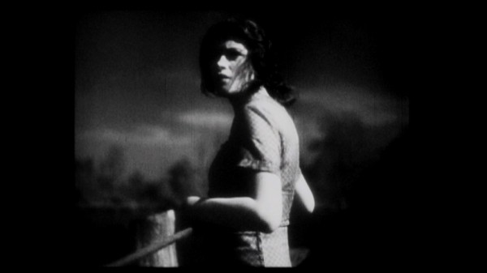
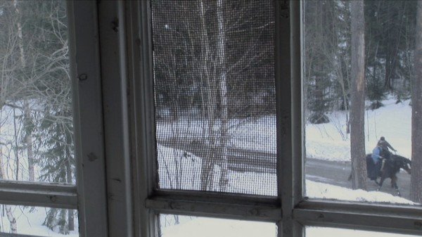

-
The Remembered Film: Marcelo Felix on Eden’s Ark
by Aaron Cutler August 15, 2012
And while we use images to remember what there is,
And we keep the images we’ve created,
Maybe what’s left will come and join us.How many readers know Fährmann Maria? It’s an early German sound film from 1936 directed by Frank Wisbar, who would later escape the Nazis and spend the rest of his film career in the United States making low-budget noir. The film, recently restored by the organization Arte, unfolds at nighttime on the outskirts of a small rural town, where a church bell accompanies the sounds of wind in the trees. A pale, tall, bald man (Peter Voß), clad in black, has been murdering the local ferrymen, leaving the chief rower’s post open for Maria (Sybille Schmitz), a newly-arrived drifter who announces, “I’m a stranger with no home.” She tells this to a beautiful young man (Aribert Mog) whose life she saved from the evil one, and with whom she subsequently might be falling in love. While he feverishly dreams of horsemen riding to take him, she dons a black dress, prepared to sacrifice herself for his sake, and marches grimly across a watery plain. She meets the monster and takes him to town with her, where a village ball lies underway. The dawn approaches quickly. She holds this new man in her arms, and dances with Death to vanquish him.

A video image of Maria staring forward into the night, rope in her hands, can be glimpsed within Marcelo Felix’s new, elusively beautiful essay film Eden’s Ark. (I discovered Arkat this year’s edition of Rotterdam; the film has also recently shown at Brussel’s Âge D’Or/Filmvondsten and São Paulo’s Museum of Image and Sound, with future screenings planned in Montreal, Moscow, and Minas Gerais). A story begins about a storm that’s been raging for three weeks and counting, and a group of sailors on an ark escaping it. While images of flowers flash by, the unseen people devote themselves to recording their memory within “an organic book” in which everything is written. “Impossible images drip from every page,” a female voice (Isable Machado) says, “but the book was never finished.” The up-close, clear botanical views of purple leaves contrast with people barely glimpsed, far away, walking through what looks like snow. “Who might these men and women have been, whose image wasn’t kept but in the guts of those who loved them?”
The sea appears in tinted, scratched filmed archive images; the shaky, crinkled, golden green of filmed potential plants arrives along with real leaves. Ark carries, catalogues, and attempts to preserve endangered species—several unfamiliar flowers and other plants, as well as unfamiliar films (glimpsed in clips) like Elmer Clifton’s Down to the Sea in Ships (1922), Sidney Olcott’s Little Old New York (1923), Rino Lupo’s The Unknown (1926), Max de Haas’s Prof. Went in the Botanical Laboratory (1932). Ephemeral fragments from family film collections float throughout all the other presented and perceived films. A multiple consciousness is emerging, we sense, that commingles objects, their images, images of those images, and the viewer’s connections between them. The voice, speaking over the images, says, “We invent memory.”
At first, films were often seen by their creators as merely dispensable objects, and many studios destroyed them as soon as their commercial lives had ended. Often the works were simply neglected, and left to be destroyed by time. Now more than 75 percent of all known silent films alone are lost entirely, and a great number more only survive in damaged fragments found by chance. Even many of the best new restorations of older films, like the World Cinema Foundation and Cinemateca Brasileira’s work on Mário Peixoto’s masterful filmed remembrance of a woman lost at sea, Limite (1931), (glimpsed in Eden’s Ark), contains pieces burned beyond repair.
As older, torn and burned archive images of nature appear in EEden’s Ark, one comes to think of film itself as an endangered species. Images of ticking clocks from whole, known silent films (Boris Barnet’s The Girl with the Hatbox, Harold Lloyd hanging from the clocktower in Safety Last!) underline the rapidity of time passing, then segue into a tale of how the opening minutes of the great filmmaker Josef von Sternberg’s The Case of Lena Smith (1929) were found by a researcher visiting a Chinese flea market. There are few film images more famous than Renée Falconetti’s face framed in close-up within Carl Theodor Dreyer’s film The Passion of Joan of Arc (1928), but as Eden’s Ark recounts, the film might be lost if a copy hadn’t been found in a Norwegian mental hospital. There’s something unnerving about the sensation of watching frames of Falconetti pass through an editing machine’s sprockets. Films are not inanimate objects for anyone who’s ever watched one, yet seeing them for what they ultimately are renders all their powerful memory associations into something fragile and perishable, as fragile and as perishable as any lifeform.
Falconetti never appeared in another movie, and I know of no images of her that exist other than in Dreyer’s film. Early films appeal to the imagination in particular, I think, not only because they are endangered, but also because they preserve humanity in a way many later films don’t. Barnet, Lloyd, Chaplin, Keaton, Gish, and many more silent stars carry worlds in their faces, often staring directly at you. Silent films encourage viewers to address them. As we create relationships with the people we’re watching, we also watch ourselves, remembering some moments from our lives and imagining others in dialogue with the people onscreen.
Marcelo Felix was born in 1967, more than 30 years after the silent era ended. The Portuguese filmmaker, poet, and editor has also studied film restoration and archiving. His debut feature, a digital preservation of older films, contains a new silent film in tribute. Carried throughout Eden’s Ark are pieces of Der Baum der Flüchtete, a 1929 film (approximately) about a scientist (Friedrich Went) and his curious young assistant Velma (Maria Carlota Saldanha) searching for new plant species, their images rendered in brightly tinted celluloid full of computer-added scratches and burns. Vilma holds up her binoculars and says, “I saw a tree like that once before.” She hopes to find it again someday, “Even if it only lives in dreams.”
How has your interest in silent film emerged?
Being able to see The Wind, The Passion of Joan of Arc, Greed, The Crowd, on TV… These films were a revelation for me in my late teens. They were my introduction to a fascinating world, where everything seemed strangely sophisticated: the visual narrative, the intertitles with subtle, quasi-aural texts, the peculiar interaction and pace of all these elements. I started looking for every opportunity to watch silent films. Most projections at the Cinemateca, in Lisbon, had no musical accompaniment then — that absence underlined the visuals, and the uniqueness of the experience.
How has your interest in film preservation emerged?
It came naturally with loving cinema, to watch so many films knowing about their missing parts, films dismembered by their own producers, or by censorship, or whatever vicissitudes. One has to make a distinction between films missing, probably for good, and films available, in whatever condition and quantity of materials. But no matter the case, there’s room for some sort of restoration. Most films no longer extant left some trace somewhere, so it’s possible to restore their existence to memory. My interest began with that thought.
How did you come up with the idea in Eden’s Ark of pairing film preservation with the movement of the seasons?
For me there’s an analogy between natural preservation and film preservation. Eden’s Ark’s point of departure was the inauguration four years ago of the Svalbard Global Seed Vault. I thought about a possible beginning for such a story, an alternative ark that would carry all the known collectible species of plants in the world in order to save them from the deluge. In the beginning, there’s just the accumulation of things. Then the confusion, of how to go through it and to make sense of it. How do you convey this information? How do you transmit it? If these species are on the verge of a catastrophe, what can you do?
You have to know them, so you have to systematize that knowledge, but you also have to give an idea of how things looked. It’s intuitive for us to draw immediately, to make a picture. How do you do that for a plant? Somebody in the ark’s crew should at this point imagine as well that a picture does not transmit everything about the way a thing is, so one way of transmitting a little more is to see how it moves, how it reflects, how it shines. So maybe moving images could be the imagined answer. Maybe during this travel they were proposing and even inventing a pre-cinema. For me it was a very funny challenge to make this convergence an organic thing. You don’t think much about it, but it’s already related — the will to preserve this species is related to that visual knowledge of it. Nature with image, and then how to preserve both. Later on you will have to preserve images of things that do not exist anymore, then you will have to preserve copies of those images, etc. This problem was introduced from the beginning.
You’re in the position of having to recreate things, and even make substitutes for them. This happens a lot with extinct species, as well as with silent films. For example, the new version of Metropolis combines scenes from different prints, and new title cards in the place of scenes that are still missing. What is your attitude about this?
Metropolis was a very helpful experience for me. With the recently restored copy, everybody understands what the missing scenes were and how they fit. For me, if they were missing, but we still knew what was missing (as well as their positions), I could perfectly cope with the absence of those images. I would imagine them by reading the description of the action. I could make myself an alternative film for a while, an alternative image, an alternative sequence.
The fake film in Eden’s Ark is also within this principle. It’s a sort of an action that is encapsulated, and then fragmented. Those are excerpts of some German film from the ‘20s, not perfectly mimicked, but evocative of the process of trying to relive something that is in very bad shape. The image is very degraded, there are parts missing, we have the indication that some text is lost, and that the intertitles are new and replaced the old ones, which were either damaged or missing. It’s familiar to us to watch films that constitute themselves as something didactic, in terms of “We are not hiding that this is in very bad shape and that there are things missing.” I find that nice. I relate to that.
How did you create the dreamt film? Why German, and why 1929?
The film date was symbolic. Many films made on the eve of the talking period were quickly neglected and forgotten. I wanted fragments of a film that, through its subject and decayed images, could help us feel the precariousness of life and memory that Eden’s Ark is about. I felt that such a story would be plausible in an unknown German film. In the end it’s a dreamy mix of a Dutch documentary, a Portuguese feature film and Italian bits and pieces, all battered in post-production.
How did you see the voiceover working in the film, and what did you want from Isabel Machado’s delivery?
There are three voices in the film, but only one voiceover, who narrates, comments, and replies to another, written voice. It was important for me to have the text evolve like a dialogue — sometimes a faux dialogue — between two parts complementing each other’s thoughts. I intended it to stress the film’s structure, of permanent enquiry and doubts. There was no rigid program for Isabel’s voiceover. Hers is a sometimes distanced, sometimes engaged text. I gave her some directions – but she’s my producer, my greatest critic, and an ardent supporter of the film, so she knew what I wanted better than I did.
What is the film deposit you show?
It’s the national moving image archive, a beautiful villa at Lisbon’s outskirts, with lots of room, which such institutions usually lack. It has a special bunker for nitrate where we filmed the vaults, and the main building is dedicated to all the processes of film preservation. They have labs, an identification department, and reconstruction rooms — physical repairing and digital restoration. It’s a very well-equipped but undermanned facility.
What are the special challenges of restoring silent films for you, as opposed to later films?
The challenge for me is not technical, because I think that any film that you put your hands on you’ll have people that will come up with the adequate ideas to relive it, to make the best of that particular fragment or feature. It’s more the time that you have while you are working, you’re giving so much with so few human resources, and while working on some films you are postponing others. It’s not that it’s bad the way it is, but we can’t cope with the passing of time. Some things will disappear because you are saving others. You are opting for what a certain context and certain circumstances tell you is important. For sure the films you are saving are important, but this will leave you less time to deal with other things, and it will eventually come to a situation in which it will be too late to try to save them, let alone do something so good as what a Murnau film or a Dreyer film will always deserve. For me, it’s always a matter of time. And then of course divulging these films, these results, and incorporating them into your living search through cinema.
Do you believe every film should be saved?
I believe we do not have the time to save even those films that we know we would love. For me the problem is not that everything should be saved. In the end, we won’t be saved. I think we’ll remain somehow, but while we are here of course we’re missing a lot of things. It’s our condition.
I’m tremendously curious for things that I won’t be able to watch. I wanted to transmit that urge by getting this fragment of The Case of Lena Smith. A Japanese researcher and theoretician, Hiroshi Komatsu, found the beginning of this lost film — it amounted to a reel of about four minutes — in a flea market in China. There’s nothing else from the film but a wonderful collection of stills. The effect that it exerted on me was the curiosity to watch this fragment — in order to have the experience, for sure, but also to measure the absence of all the rest. I wanted to use part of the newly discovered excerpt in counterpoint to the sequences that only remain in the form of still frames. So the idea was: it’s the beginning of the film, and while this is happening — while we have Esther Ralston in a promenade in Vienna — everything is still possible. And then things sort of freeze, and we no longer have that, and this is absence. This is what we have for a lot of things that we could love. To have a glimpse, and understand that this is so precarious. Unfortunately we haven’t been granted permission to use the excerpt… I finally edited the whole sequence over stills reflected on an eye — it’s the eye that moves.
How did you decide to present the images from preexisting films in this new film?
From the start I wanted to include a number of excerpts from favorite films, which could support the narrative, in a sometimes evocative, sometimes dynamic way. I wanted the movement from Soviet films that are a bit like slapstick — I have Boris Barnet, I would have liked to include Abram Room, but in fact this is a very low-budget project, and those are very expensive films, a bit unexpectedly. And Harold Lloyd, which is the American counterpart with Safety Last!, it’s a hugely expensive thing just having those 5-6 seconds.
I also thought in terms of motifs. For instance, the idea of the rope that is a character in itself throughout Eden’s Ark was something that came to me by that image of Fährmann Maria, a really haunting visualization of the heroine’s challenge to the unknown. Her courage, and her fragility, seemed to me to symbolize something that would be best expressed in her fight against death. We had, relatively long before The Seventh Seal, a figuration of death that was similar. The dark-clad figure with sinister looks, but with an agenda. It’s not an irrational character, it’s someone that pursues an objective and can be cheated, and can be eventually killed. Fährmann Maria is a film that kills death in order to preserve love, and a film that kills death — all films for me, in a way, transmit that image. Image kills time.
Do you feel that mortality is the secret subject of every movie?
It’s one of the secret subjects. Every filmmaker is carrying it in a way. It can be clumsy, or desperate. Or it can be very interesting.

How did you decide to present the outdoors?
I always thought that we would have to shoot in vast spaces. There were several levels of presentation of this idea of nature. One would be the wild, unprotected nature in the Amazon. Then the controlled and exposable and logical image of nature in the botanical gardens. And finally the invisible, ultra-protected nature in the seed vaults. This global seed vault, it is like the limit of utopian preservation, confined in a bunker that is relatively small, with a huge ambition of protecting every culture of food interest, though not every botanical culture. It’s very specialized. It’s a small place in a huge landscape. For me, the vastness would always be something that the film would tend to, because vastness would communicate the unknown, and the undecided, and the absent, and the impossibility of finding answers in that reassuring way that you believe when you are in civilization and pretend that these problems are not problems, that you have time, that there’s a logic in all this, and that to preserve is something natural.
To preserve is natural?
I think the idea of keeping is so innate in us that we could live both with that and with the absence of that: the idea that we should know and that knowing is also having. It’s having the advantage of experience, the possibility of reading the world and having keys to understand it, that otherwise we as individuals and as a species will just lose.
What do you think of new kinds of digital restoration?
I’m really not very worried in terms of the substance of preservation, of the options that you’ll have available, because in the end…Nitrate is an experience. It’s a beautiful experience that can be better or worse reproduced in a digital transfer. But most of the silent films that I’ve seen, I haven’t seen them projected, in nitrate prints. And maybe half of my overall film viewing or a little more I’ve seen on very small screens. I would never have the chance to see all those films projected. I know that these films can be projected, it’s good to have that choice, but I’m more worried as to the possibilities of projecting them when we’re not having film anymore.
And since Eden’s Ark is digital, you’re presenting celluloid images digitally.
Yes, there’s a problem that my film postpones, because my film is integrated into what the technology is now, even if it evokes the fact that it is also a transcription from another format. But the technological leap means that you’ll eventually lose film, and then how do you make new stocks of it in order to transfer the things that are waiting? So digital is not — of course it helps, but it’s not really a disinterested help, it became the only way. From now on you’ll have to research that path. At the same time, you’ll soon end up with no technology and no expertise with all the things that dealt with film, and in the absence of an industry of film, there will be no spare parts for all these editing tables and these projectors.
So is this the future for you?
It does not have to be, but economically I think that it will probably evolve into something that won’t go back to film, unless there’s some evolution you can’t imagine, a huge retro-seduction that will make these things practical and unexpectedly visible again.
What did you think of The Artist?
Its happy end is the main character, a movie star, overcoming his decline when he finally makes a comeback, in a talking picture. That’s the completion of his recovery, and I couldn’t help feeling that in such context silent film was made look like a sort of unhealthy condition — The Artist reinforces this reasoning by becoming a talkie itself at that moment. It’s a common approach to the silent era, summing up the drama of its ending to actors with inadequate voices or accents, struggling for their careers. When in fact it was a whole, vibrant form of practicing the art of cinema that ceased then, its evolution interrupted. That was a road not taken, and it can’t certainly be reopened and revived without truly understanding its poetry.
What are the present situation’s positives?
I think there’s more demand for knowledge, since there is more the idea of what we are missing, but at the same time we are not being systematically governed by this will of knowledge. When I read that normally a silent film DVD doesn’t sell more than 800 or 1,000 copies in the United States, the whole country, I believe that we are being governed by other priorities that turn this part of our patrimony into something that is a deluxe, superfluous product. And I think this patrimony can’t survive by itself, it must be supported. That’s also a part of the analogy between the preservations of nature and of images. Both realities are mined with precariousness of budgets, and things can be canceled, can be downgraded, can be abandoned. We can’t take anything for granted. It’s like life. So we have to try and share and take advantage of the things that we can have access to.
Thanks to Dave Kehr for research help, and for loving old movies.
all images courtesy of C.R.I.M. Productions